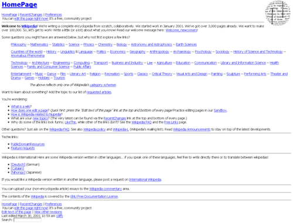
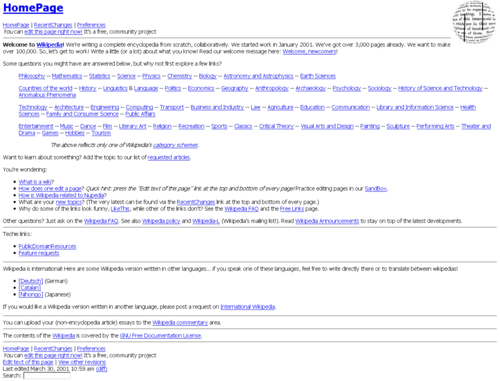
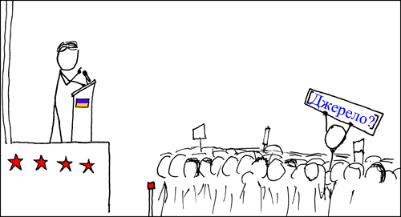

Головна сторінка Англійської Вікіпедії станом на 30 березня 2001 року.
Вікіпе́дія (англ. Wikipedia, МФА: [ˌwɪkɪˈpiːdɪə]) — загальнодоступна вільна багатомовна онлайн-енциклопедія, я
кою опікується неприбуткова організація «Фонд Вікімедіа».Назва утворена від слів «вікі» (технології для створ
ення сайтів) та «енциклопедія». Засновниками Вікіпедії є Ларрі Сенгер та Джиммі Вейлз.
Офіційне відкриття в
ідбулося 15 січня 2001 року.Будь-хто, у кого є доступ до читання Вікіпедії, також може редагувати практично всі
її статті. Вікіпедія — п'ятий за популярністю вебсайт у світі.У сукупності випуски Вікіпедії охоплюють пона
д 62 мільйони статей, які залучають близько 2 мільярдів унікальних відвідувань на пристрої на місяць і понад 14
мільйонів редагувань на місяць (приблизно 5,2 редагування в секунду в середньому) станом на листопад 2023 року.
26% трафіку Вікіпедії припадає на Сполучені Штати, далі йдуть Японія – 5,9%, Великобританія – 5,4%, Німеччина
5%, Росія – 4,8%, а решта 54% розподіляються між іншими країнами, згідно з даними, наданими SimilarWeb., щ
о написані добровольцями з усього світу. Учасників Вікіпедії називають вікіпедистами. Як інтернет-довідник Вік
іпедія є найбільшою і найпопулярнішою серед подібних сайтів.
За обсягом відомостей і тематикою Вікіпедію вважа
ють найповнішою енциклопедією, яку коли-небудь створювали за всю історію людства.Матеріали Вікіпедії, як і інш
их проєктів Фонду Вікімедіа, є вільними до використання, розповсюдження та вдосконалення на умовах ліцензій Cr
eative Commons Attribution Share-Alike 3.0 Unported та GFDL, а сам сайт проєкту не містить рекламних банерів і
працює завдяки добровільним пожертвам. Деякі оператори мобільного зв'язку надають доступ до Вікіпедії без
стягнення плати за Інтернет-трафік.
Однією з переваг Вікіпедії є можливість подання інформації рідною мовою — са
йт складається з 356 мовних розділів. Найбільшою Вікіпедією за кількістю статей є англійська, яка містить понад 6 млн статей.
Вікіпедія почалась як братній проєкт Нупедії, безплатної англомовної онлайн-енциклопедії, статті до якої писали спеціалісти, після чого статті проходили процес формальної перевірки. Нупедія заснована 9 березня 2000 року і б ула власністю Bomis, Inc, компанії, що володіла також однойменним вебпорталом. Головними фігурами були Джиммі В ейлз, головний виконавчий директор Bomis, та Ларрі Сенґер, головний редактор Нупедії та згодом Вікіпедії. Нупед ія спочатку публікувалась під власною ліцензією відкритого контенту, а потім перейшла на GNU Free Documentation License перед заснуванням Вікіпедії на наполягання Річарда Столмена.

Головна сторінка Англійської Вікіпедії станом на 30 березня 2001 року.
Заснували Вікіпедію Джиммі Вейлз і Ларрі Сенґер. Вейлзу приписують визначення напрямку вільно реда
гованої енциклопедії, а Сенґеру зазвичай приписують створення стратегії використання вікі для досягнен
ня цієї мети. 10 січня 2001 року Ларрі Сенґер запропонував у списку розсилки Нупедії створити вікі, як під
готовчий проєкт для Нупедії. Вікіпедія була формально запущена 15 січня 2001 року як один англомовний розд
іл на сайті www.wikipedia.com, про відкриття оголосили в списку розсилки Нупедії. Політика Вікіпедії п
ро «нейтральну точку зору» сформувалася в перші місяці, вона була схожа на політику „неупередженості“ Нуп
едії. Щодо іншого, то спочатку було відносно небагато правил і Вікіпедія функціонувала незалежно від Нупедії.
Вікіпедія здобула своїх ранніх учасників від Нупедії, завдяки статтям на Slashdot та індексуванню пошуковими
машинами. Вона виросла до 20000 статей і 18 мовних розділів до кінця 2001 року. На кінець 2002 року вона до
сягла 26 мовних розділів, 46 — на кінець 2003 і 161 мовний розділ був на останні дні 2004 року. Нупедія
і Вікіпедія співіснували поки колишні сервери не були відключені назавжди в 2003, а тексти були інкорпоров
ані у Вікіпедію. Англійська Вікіпедія минула двохмільйонну позначку 9 вересня 2007 року, ставши найбільшою
енциклопедією, що коли-небудь існувала і перевершила навіть енциклопедію Юнле, що тримала рекорд рівно 600
років.
Посилаючись на страх комерційної реклами та відсутність контролю у відчутному англоцентризмі Вікіпедії, к
ористувачі іспанської Вікіпедії відокремились від Вікіпедії та створили Enciclopedia Libre в лютому 2002
року. Пізніше цього року Вейлз оголосив, що Вікіпедія не буде розміщувати рекламу, а вебсайт змінив
адресу на wikipedia.org. Також було розпочато багато інших проєктів вікі-енциклопедій, які відрізн
яються філософією від відкритої та НТЗ редакційної моделі Вікіпедії. Wikinfo не вимагає нейтральної то
чки зору і дозволяє оригінальні дослідження. Нові проєкти на зразок Вікіпедії, такі як Citizendium, Sch
olarpedia, Conservapedia, а також Google's Knol, у якому статті мають більш творчий характер, — бул
о розпочато у відповідь на відчутні обмеження Вікіпедії, такі як політика щодо рецензування, оригінальни
х досліджень і комерційної реклами. Динаміка росту 8 найбільших вікіпедій у період 2001—2010 роки.
Проєкт набув популярности серед користувачів Мережі, і пізніше з'явилися розділи Вікіпедії іншими мовами
Англомовний розділ є найбільшим за обсягом у Вікіпедії, і однією з найбільших енциклопедій узагалі. До 9
вересня 2007 року титул найбільшої енциклопедії 600 років належав Енциклопедії Юнле. Станом на грудень 2
007 року він містив понад 2 млн статей, а в березні 2010 вже більше ніж 3,2 млн. З 15 червня 2013 року д
ругим за розміром є нідерландський розділ з понад півтора мільйона статей, обігнавши завдяки використанню
ботів німецьку Вікіпедію (що до того була другою протягом 12 років). Усього ж є 321 розділ Вікіпедії різ
ними мовами, хоча тільки 47 містять понад 200 000 статей на 12 травня 2021 року, серед яких і українськи
й, який має 1 377 243 статей.
Засновник Вікіпедії Джиммі Вейлз висловився про ідею Вікіпедії та суміжних проєктів:
*Уявіть собі світ, в якому кожна людина може вільно ділитись знаннями всього людства.*
Вікіпедія позиціонує себе як «вільна енциклопедія» (англ. The Free Encyclopedia). Створю
ючи нові чи редагуючи наявні статті, користувачі публікують свій внесок на умовах вільних лі
цензій Creative Commons Attribution Share-Alike 3.0 Unported та GFDL. Матеріали Вікіпедії мож
на вільно використовувати, розповсюджувати та вдосконалювати на умовах цих ліцензій, що робить
її частиною т. зв. «вільного вмісту» або «вільної культури».
Одним з найголовніших принципів Вікіпедії є дотримання авторського права: до статей можна дода
вати тільки власний текст або ті матеріали, на які користувач має відповідні авторські права. Л
ише так можна бути певними, що текст Вікіпедії можна законно вільно поширювати. Окрім того, сло
во «free» в англійській мові означає також «безплатний». Вікіпедія та інші проєкти Фонду Вікіме
діа працюють без розміщення рекламних банерів чи надання платних послуг. Використання Вікіпедії
є повністю безплатним та вільним від реклами.
Принципи редагування Вікіпедії втілені в «п'яти основах» та численних політиках і настановах, що
призначені формувати відповідний вміст. Навіть ці правила зберігаються у вікі-формі, і редактори В
ікіпедії як спільнота пишуть і переглядають ці політики та рекомендації і слідкують за їх вико
нанням — видаляють, додають шаблони із зауваженнями або змінюють статті, що не відповідають правил
ам. Правила різних Вікіпедій загалом дуже схожі, хоча можуть відрізнятися в деталях. Окремим корис
увачам через голосування надають права адміністраторів. Такі користувачі можуть вилучати чи захищат
и окремі статті від редагування, блокувати користувачів-вандалів та виконувати інші адміністративні
функції. Спільнота може також позбавляти адміністраторів їхніх прав.

Зображення типової «хвороби» вікіпедистів
Оскільки Вікіпедію може редагувати кожен, одним з головних пунктів критики Вікіпедії часто стає те , що ніхто не відповідає за правильність і повноту інформації. Аби розв'язати цю проблему, до статей додають посилання на авторитетні джерела, щоб підтвердити ту чи іншу інформацію та дати можливість читачу самому перевірити її точність. Серед редакторів Вікіпедії це часто формулюється так: «вериф ікованість не означає істини» — тобто читачі, а не енциклопедія, в кінцевому підсумку відповідальн і за перевірку правдивості статей і можуть формувати власні інтерпретації. Згідно з правилами Вікіпедії, щоб стаття могла бути опублікована у Вікіпедії, вона повинна бути енциклопедичною і не бути словниковою чи схожою на таку. Тема статті також повинна відповідати критеріям значущості , що зазвичай означає, що вона повинна бути достатньо розкрита в інших авторитетних джерелах, таких як провідні медіа чи академічні видання, незалежні від предмету статті. Крім того, Вікіпедія має поширювати знання, що встановлені і визнаються. Іншими словами, вона не може містити, наприклад , нову інформацію чи оригінальні дослідження. Нарешті, Вікіпедія повинна бути неупередженою та висвітлювати всі думки та точки зору, якщо можуть бути підтверджені належними зовнішніми джерелами . Це правило знане як нейтральна точка зору.
Джиммі Вейлз — один із засновників Вікіпедії і колишній голова Фонду Вікімедіа
На відміну від більшості енциклопедій, Вікіпедія доступна різними мовами. Наразі існують приблизно 64.9 млн статей у 321 мовному розділі, серед яких навіть є такі мови, як латина або церковнослов'янська мова. Для деяких мов існують розділи рі зними діалектами або правописами, наприклад білоруська «наркомівка» та білоруська «тарашкевиця», або норвезька «букмол» т а норвезька «нюношк». Також існує мовний розділ простою англійською, в якій використовують найпростіші слова та граматику . Найбільшим мовним розділом незмінно є англійський, який налічує понад 6 млн статей. Український мовний розділ наразі на лічує 1 377 243 статей і займає 14-те місце за кількістю статей, між китайським (13-те місце) та в'єтнамським (15-те місц е) розділами. Наразі 18 мовних розділів мають більше мільйона статей. Тут зображено перші 10 місць по кількості статей:
Англійський (6 994 488 статей)
Себуанський (6 117 065 статей)
Німецький (3 015 535 статей)
Шведський (2 609 749 статей)
Французький (2 684 139 статей)
Нідерландський (2 187 162 статей)
Російський (2 045 106 статей)
Іспанський (2 033 969 статей)
Італійський (1 918 577 статей)
Єгипетсько-арабський (1 627 207 статей)